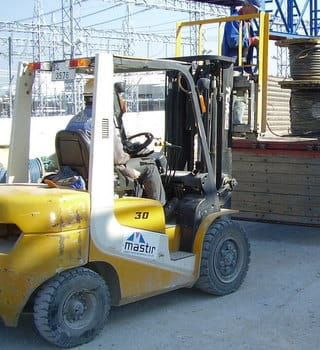
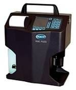

Special Equipment of Mastır Enerji
Terex
A600 Crane
Has 60 ton lifting capacity, with 32,4 m (106 ft) full power mechanically synchronized boom.
Technical Specifications.Mercedes / 35t Hiab

3t Forklift

Ford Cargo / 35t Hiab


JLG 1250 AP
42 meter double joint Articulating Boom Lift

HIAC PODS
Portable Oil Diagnostic System
We can analyze and report hydrolic oils from 120ml bottles offline and also from online. Reports are fully compliant with cleanliness requirements. Intermediate results with laboratory accuracy.
Performance Specifications:
- 8 Channels
- Channel sizes: 1, 2, 5, 10, 15, 25, 50, 100μm
- Flow rate: 50mL/min standard
- Calibration ISO MTD (based on ISO 11171)
- full ISO 11171 or ISO 4402 optional
- Counting efficiency meets JIS B9925:1997
- Concentration limit 20,000 particles/mL at 5% coincidence loss (per ISO 11171)
- 30,000 particles/mL at 10% coincidence
- Fluid Temp Range 0 to 90° at 25 °C ambient (32 to 194°F at 77°F ambient)
- Measured Fluid Temperature.....
Honing Works
- Can obtain the desired rate of surface roughness
- Supported diameter range: 19-98mm
- Device measuring range: 50-150mm

Hytorc JetPro 4.2 / HY-1Y / SQV-8
Hydraulic Torque Sockets - Torques Values:- HY-1Y max 700 bar, 1465 Nm
- HY-8 SQV max 700 bar, 11500 Nm
AEG ELOTHERM - High Frequency Inductive Heating Machine
Post Weld Heat Treatment (PWHT) works with 6 channel induction method
Cooperheat HTU 578-50 kVA Heat Treatment Machine
Modular Automatic Heat Treatment Control UnitPWHT works with 6 channel resistance
Control unit integrated with a microprocessor is able to control up to 6 independent channels.
Measurable temperature range: 0-900 °C
Recorder can print each input on a paper graph chart

Electroheat Mobile Heat Treatment Center - TF 80512
- 12 Channel, 440A
- T/C fault alarm
- Low effect alarm
- Alarm for faulty +/- connection on T/C
- 12” high resolution TFT touch scree